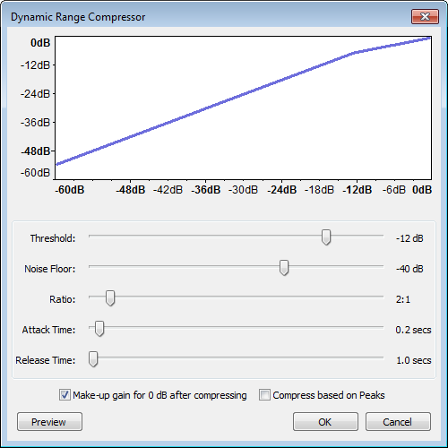
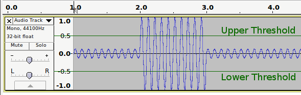
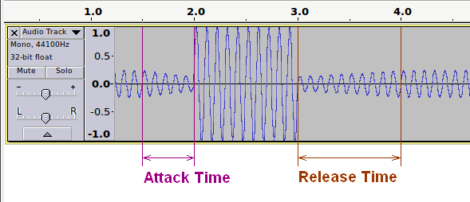

Compressor
From Audacity Manual
- Accessed by:
- 
Graph
The graph shows the input level along the bottom (horizontal axis) and the output level scale on the left (vertical axis) to illustrate the dynamic range compression effect. The graph will change as you adjust the Threshold and Ratio sliders, reflecting those settings. The graph does not reflect changes in any of the other controls, although they all affect how the audio sounds after applying the effect.
Controls
- Threshold: The level above which compression is applied to the audio.
- Noise Floor: The compressor adjusts the gain on audio below this background level so as to prevent it being unduly amplified in processing. This is mainly useful when compressing speech, to prevent the gain increasing during pauses and so over-amplifying the background noise.
- Ratio: The amount of compression applied to the audio once it passes the threshold level. The higher the Ratio the more the loud parts of the audio will be compressed. The Ratio sets the slope of the blue line on the graph above the threshold.
- Attack Time: How soon the compressor starts to compress the dynamics after the threshold is exceeded. If volume changes are slow, you can push this to a high value. Short attack times will result in a fast response to sudden, loud sounds, but will make the changes in volume much more obvious to listeners.
- Release Time: How soon the compressor starts to release the volume level back to normal after the level drops below the threshold. A long time value will tend to lose quiet sounds that come after loud ones, but will avoid the volume being raised too much during short quiet sections like pauses in speech.
- Make-up gain for 0 dB after compressing: Amplifies the resultant audio in all selected tracks after compression to a peak level of 0 dB. All tracks are amplified by the same amount as in the Amplify effect.
- Compress based on Peaks: Base the threshold and gain adjustment on peak values of the waveform rather than the average (RMS) value used when in default (unchecked) state.
- When using RMS, the compressor uses "downward" compression, making louder sounds above the threshold quieter while leaving quieter ones below it untouched.
- When using peak values, "upwards" compression is applied which makes the audio louder, but amplifies the louder sounds above the threshold progressively less than those below it. Where the original (input) level is 0 dB there is no amplification.
Example
Before Compression:
A simple sine wave that begins at -12 dB, jumps up to 0 dB, then drops back down to -12 dB, to demonstrate how the Audacity compressors handle signals.
When Compress based on Peaks is not selected, audio with an RMS level beyond the threshold range will be reduced. If Make up gain is enabled then the entire selection will be boosted to make up for this gain reduction.
When Compress based on Peaks is selected, audio with a peak level within the threshold range will be boosted.
- 
After Compression:
In this example:
- Compressing based on peaks is enabled so audio with a peak level below the threshold is boosted. You can see that the audio before 1.5 seconds on the Timeline has been made louder than it was in the "Before Compression" image.
- Attack is 0.5 seconds, during which period the compressor progressively anticipates the coming peak.
- Release is 1.0 seconds, during which period the boost to the quieter audio is progressively resumed.
- Ratio is 10:1.
- 
Further reading on compressors
There are some good (but not too technical) explanations of compression here:
- Compressors demystified (Harmony Central)
- Compression Made Easy with audio files (Sound On Sound)
More advanced:
- Advanced Compression Techniques Part 1 and Part 2 (Sound On Sound)
An alternative free compressor
Please see Chris's Dynamic Compressor for a popular alternative compressor which may be downloaded for free.